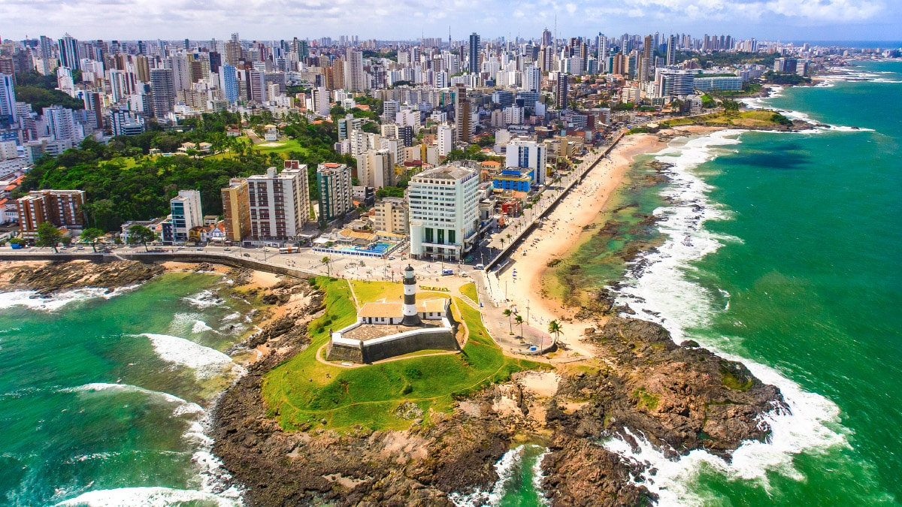
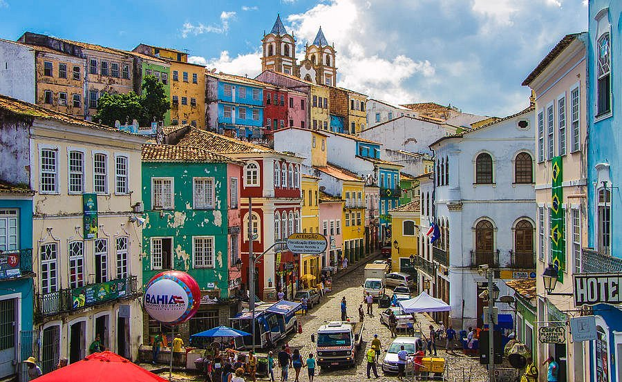
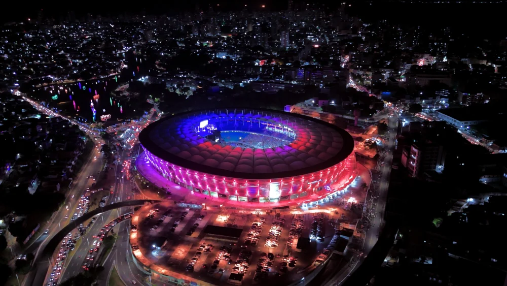

Sobre o destino
Salvador é uma das cidades mais vibrantes do Brasil, conhecida por sua rica cultura afro-brasileira, música, culinária e arquitetura histórica. É um destino perfeito para quem busca história, praia e diversão.
Pontos Turísticos Imperdíveis:
- Pelourinho: Centro histórico colorido e cheio de cultura.
- Elevador Lacerda: Ligação entre cidade alta e baixa.
- Farol da Barra: Um dos cartões-postais da cidade.
- Igreja do Bonfim: Famosa pelas fitinhas e tradição.
- Praias: Porto da Barra, Flamengo e Itapuã.
- Futebol: Estadios Arena fonte nova e Barradão dos times Esporte Clube Vitória e Esporte Clube Bahia
Guia Rápido

Melhor época: Setembro a março - o é clima quente e ensolarado.

Como chegar: Aeroporto Internacional de Salvador recebe voos de todo o Brasil.

Idioma: Português é o idioma oficial.

Moeda: Real (R$) - cartões são amplamente aceitos nos lugares.
Custos Médios
- Hotel: R$150 - R$600 por noite
- Alimentação: R$20 - R$80 por refeição
- Transporte: R$4 - R$20 por trajeto
Localização
Galeria de Fotos


